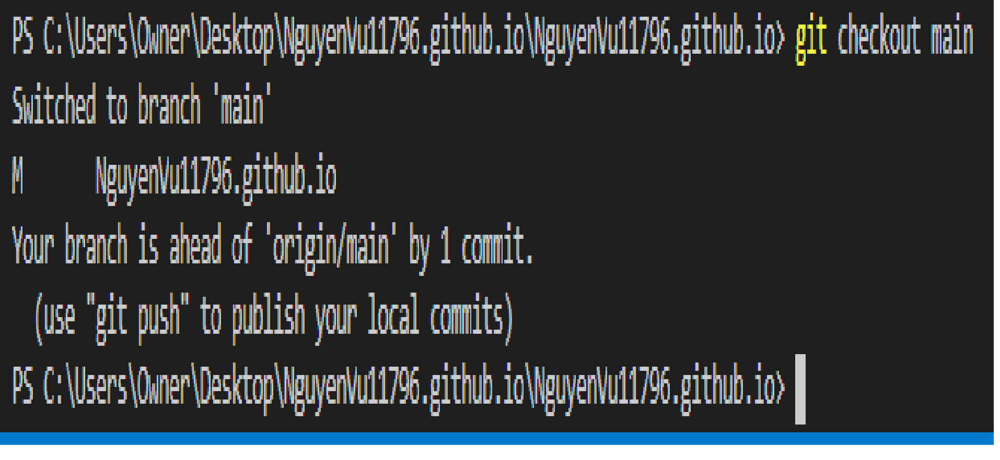
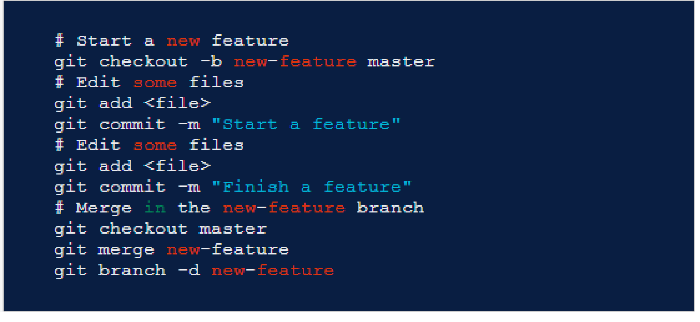

Modern tech environment requires online communication, team coding as well as product review and profile evaluation. Just as facebook answers all the social needs in an online format, GitHub is one of the latest children of cloud computing, where you can upload your data and files and download others' in the same cloud given permission. Specifically, Github is an online platform that allow users to collaborate on their coding and control the versions of scripts they upload and download.
Want to know more about GitHub? Click
Git is a free open-source version control system developed to help coders and other IT professionals manage their local codes independently, create distinct branches to avoid conflicts and finally merch them all together and upload and syncronize with GitHub. It achieves these tasks by using simple commands that signal pull, clone and push requests to GitHub as well as creating branches by using branching commands.
Git allows you to do the following with Visual Studio Code (the Default IDE for our HTML in COSC 2083 course):
Initialize a repository.
Clone a repository.
Create branches and tags.
Stage and commit changes.
Push/pull/sync with a remote branch.
Resolve merge conflicts.
View differences in different version, hence version control.
To learn more about Git, visits its official website to read up on this free open source version control system by clicking
Visit this website for some basic Git Commands:
Branching is an important part of git and github. While working with groups or teams you need to have multiple branches to minimizes conflict and the once individual codes on different branches have been finished and debugged they can be merged together and pushed onto the remote repository on GitHub.
To check how many branches you have: Git branch
To switch between branches: git checkout "another branch name here"
Merging: when you have finshes working on adding or deleting files on other branches you can merge your branches onto the main branch. Below is a common workflow of switching between branches and then merging them.

created with
HTML Website Builder .